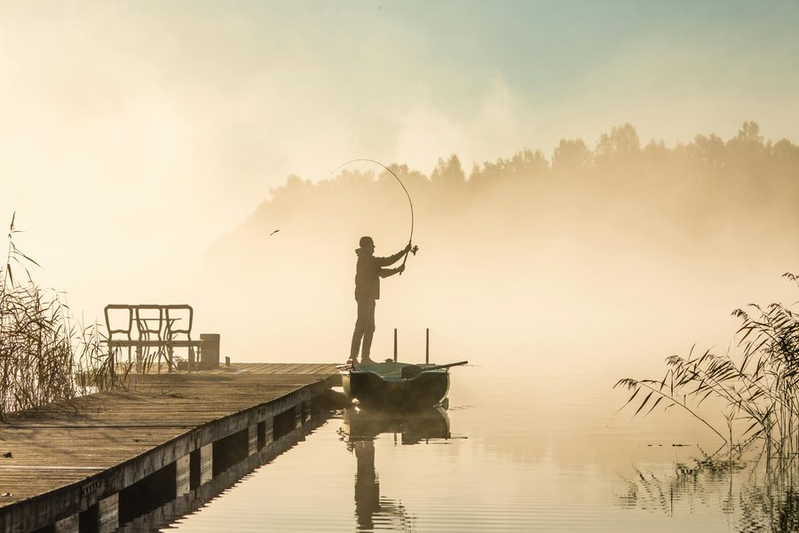

Carolina Cast was created to help anglers discover better fishing spots, choose the right lures, and feel more confident before heading outdoors.

To make local fishing information simple, useful, and easy to understand for anglers across the Carolinas.
Fishing teaches anglers to slow down, stay focused, and wait for the right moment.
Successful trips start with knowing the location, weather, the species, and the right gear.
Time on the water helps people disconnect, enjoy nature, and build lasting memories.